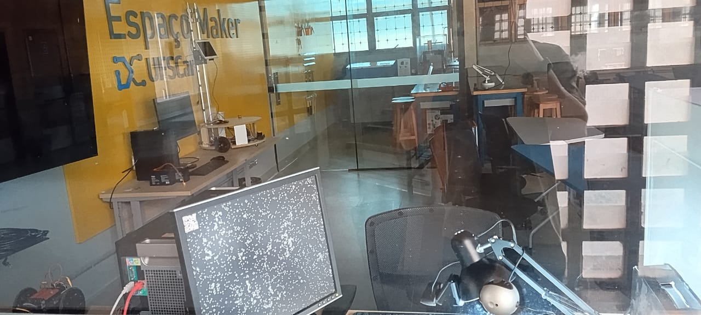
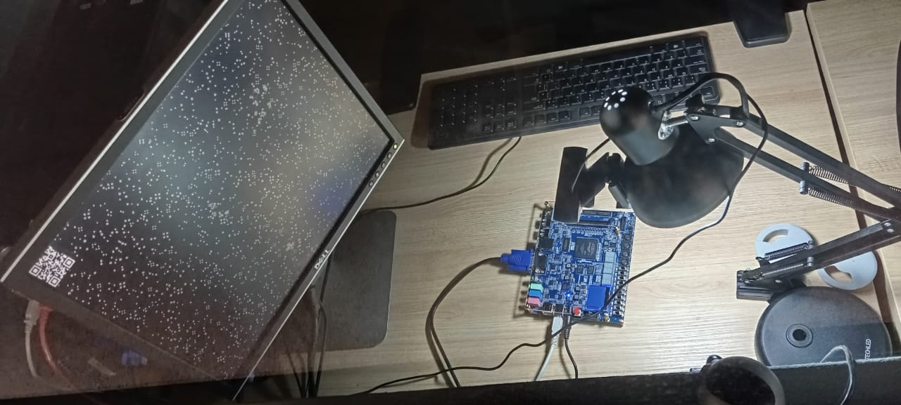

Lab. Remoto de Embarcados - DC/UFSCar
Sobre o sistema...
A primeira versão deste laboratório foi criada com a ajuda do Prof. Rafael Aroca, a partir de seu laboratório remoto para microcontroladores.
O kit ligado ao sistema era o Zybo Z7-20: Zynq-7000 ARM/FPGA SoC Development Board.
Nas imagens a seguir podemos ter uma ideia do sistema instalado na minha sala.


As orientações de uso nos primeiros vídeos desta lista ainda são válidas:
Assita ao último vídeo da lista acima para saber como contribuir com um exemplo para o laboratório
Agora, o kit ligado ao sistema é o Terasic - SoC Platform - Cyclone V - DE10-Standard. Ele também foi movido para o Espaço Maker do DC/UFSCar e conta com iluminação auxiliar para que possa ser usado durante a noite.

